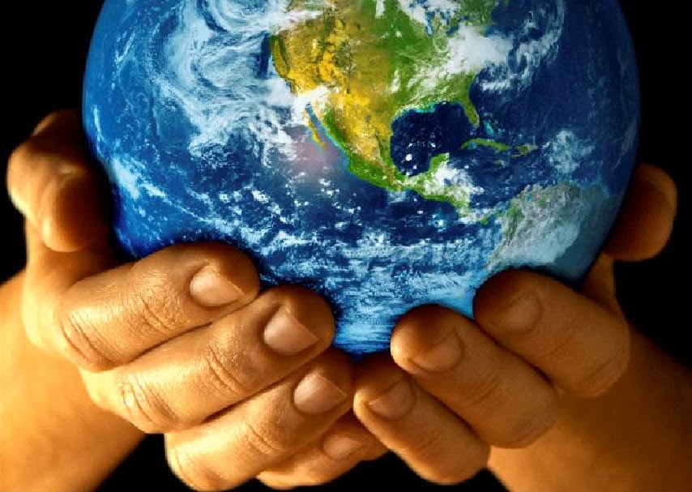

« L’équanimité est un parfait équilibre de l’esprit. Dans cet état, enraciné dans une vision pénétrante et profonde des choses, l’esprit est inébranlable. Quand on regarde le monde qui nous entoure et que l’on regarde au fond de notre cœur, on voit clairement combien il est difficile d’obtenir et de maintenir l’équilibre de l’esprit. »
Nyanaponika Thera – The Four Sublime States (1958)
Au moment présent
Attendre patiemment. Patienter en attendant... L'ensemble de la planète est en passe d'être mis aux arrêts (à prendre presque au premier degré compte tenu des premières amendes pour les citoyens ne respectant pas le confinement). En à peine 3 mois, un virus a su tirer profit de ce que la plupart croie être notre plus grande force : la mondialisation des marchandises. Nous découvrons que c'est également notre faiblesse. "Ubuntu" : nous sommes tous (re)lié.e.s.
◊♦◊
L'ambiguïté de la situation
Ainsi donc la Chine, pays actif, agité, impatient, a trouvé son maître dans l'infiniment petit. Fallait-il qu'ils soient encore inspirés de leur sagesse ancestrale pour stopper si vite leurs productions et leur effervescence. Force est de constater que les pays qui ont été touchés ensuite ont suivi leur exemple. Même le Brésil de Bolsonaro ne devrait pas tarder à rejoindre les bons élèves.
Sous cette menace, jamais, dans l'histoire de l'humanité, un aussi grand changement n'aura été obtenu par consentement ! Pas de révolution. Pas de tergiversation. A peine un petit rappel à l'ordre des baigneurs de soleil qui avait profité de l'ambiguïté de ne pas sortir et, en même temps, d'aller voter...
Les personnels soignants sont une fois de plus reconnus pour leur utilité publique ! Tous les soirs à 20h, on chante leurs louanges. Peut-être obtiendront-ils la revalorisation salariale tant attendue et les moyens humains et logistiques depuis longtemps perdu.
La pollution urbaine a disparu au dessus de Pékin. Les parents jouent avec leurs enfants. La lecture retrouve ses lettres de noblesse.
Mais que ce passe-t-il ?

◊♦◊
Ce qui nous dépasse
Prendre conscience que, même sans symptôme, nous pouvons être une menace pour notre prochain n'est pas chose facile. Pourtant la sagesse populaire, habituellement peu philosophe, contribue désormais à relayer les messages de prévention (y compris les plus farfelus). Difficile d'acheter un paquet de papier toilette sans ressentir un sentiment coupable... Et la différence entre ceux qui doivent travailler pour l'intérêt de la population et ceux qui doivent encore travailler pour l'intérêt des patrons crée un fossé de perceptions opposées. Sans compter que pour les commerces non essentiels, les métiers de la culture, les artisans... la vie économique s'est arrêté brusquement. A moins d'oser profiter de cette pause imposée, la situation est plutôt anxiogène pour eux. La solidarité nationale les oubliera-t-elle ?. Même les SDF et la possiblité qu'ils soient contagieux commence a être prise en compte. Mais les plus fragiles seront aussi les plus touchés.
◊♦◊
Finalement tout ne va pas si mal
Une fois n'est pas coutume, il y a un pilote dans l'avion ! Les décisions ont été prises et sans trop attendre. La preuve en est qu'elles ont été prises sans savoir réellement comment elles seraient appliquées. Et que les français.e.s se sont tou.te.s retroussé.e.s les manches dès le lendemain ! Il y a fort à parier que l'effet boule de neige a fonctionné au delà de l'espérance des décideurs. Par réflexion et anticipation (nouvelles mamelles de la nation après les fameux labourage et paturage ?), la courbe de progression du virus va éviter des dizaines de milliers de contaminations et leur part macabre. Certes l'économie va en prendre un sacré coup et aussi les professionnels de la santé. Mais la destruction aura été limitée (hormis pour les pauvres intérimaires, dommages collatéraux de la guerre économique) et le principal aura été préservé. Il suffira simplement de mettre les prélèvements sociaux sur pause le temps que la vie reprenne et les profits d'hier et de demain pourraient facilement combler ce passage en creux.
◊♦◊
Voici venir le temps du réveil des consciences

Les citoyens sortent peu à peu de la douce rêverie de l'essor économique des 40 dernières années. A coup de propagande pour la chimie (dans l'agriculture et la santé), dans la finance (les profits valant plus que nos vies), les victimes sont plus nombreuses chaque jour. Des cancers généralisés aux les diplômé.e.s de supermarchés, la vie a pris cher... Le retour à l'essentiel résonne comme un réflexe de survie. Les aspirants au bonheur durable sont de plus en plus à se présenter au guichet des reconversions. Les millenials cherchent tout sauf la sécurité tant prônée par les générations passées. Un jour après l'autre. Le « moi d'abord » qui choquait tant prend du terrain et du sens quand il est suivi d'un « vous ensuite ». La jeunesse, outillée des nouvelles technologies émancipatrices (pour illustration l'effet sur les violences faites aux femmes passées de « silence on viole » à cause commune de l'humanité), arrive avec son potentiel à exploiter en abondance de créativité. Et nous n'en sommes qu'aux premiers balbutiements.
◊♦◊
Le monde demain

Ces mots empreints d'optimisme ne doivent pas faire oubliés qu'il ne reste à l'humanité que quelques mois à peine plus d'une année pour amorcer des profonds changements. Et pas seulement durant une période de confinement. L'exemple de ses derniers jours montre qu'un autre monde est possible. Que nous sommes capables de nous adapter rapidement. Toutefois, notre développement ne doit plus, à partir de maintenant, hypothéquer l'avenir de nos enfants. Les emprunteurs ne sont pas solvables. Le relevé des empreintes carbone montre que nous participons tous à notre petit niveau à un assassinat du monde vivant. Les pays industrialisés et les grandes entreprises font de même, à plus grande échelle. Notre planète ne disparaîtra pas. Le monde végétal a une puissante résilience (voir l'espace sauvage qu'est devenu la région de Tchernobyl). La fragilité est dans le monde animal au règne duquel nous appartenons. Nous sommes sensibles aux changements de température, aux pollutions de l'air, de l'eau... Nos campagnes ont perdu leur capacité à absorber l'eau de pluie et nous inondent. Nous sommes aussi épuisés que les terres agricoles. Nous aspirons tous au repos de nos vies trop intenses, au répit des catastrophes et de la détresse de nos proches.
Le changement climatique à vue d'oeil◊♦◊
L'utopie réaliste

Le « champion de la Terre » a raison : nous sommes en guerre. Mais pas contre un virus qui ne fait rien d'autre que de se développer pour rester en vie lui aussi. Nous sommes en guerre contre nous même. Rumeurs, manipulations, influences, agressions. Il est temps de pointer du doigt ce qui constitue une violence quotidienne pour soi-même et les plus fragiles. Il faut trier le bon grain de l'ivraie : sélectionner les bonnes idées des mauvaises pratiques. En quelques mois, à peine quelques années, l'humanité a pris peu à peu conscience, grâce à ses progrès sur la connaissance de l'état de la planète, qu'elle allait devoir faire un choix. En attendant que celui-ci soit fait rapidement et suivi d'engagements concrets, notre société ressentira le même blocage que vit toute personne qui ne souhaite pas accepter son état, son équanimité*. Et c'est quand nous aurons pris collectivement notre décision que toutes les formidables énergies qui ont déjà émergées trouveront un vrai écho à leur utilité principale : celle de construire un nouveau monde.
« Quand on regarde le monde qui nous entoure et que l’on regarde au fond de notre cœur, on voit clairement combien il est difficile d’obtenir et de maintenir l’équilibre de l'esprit » et de la vie.